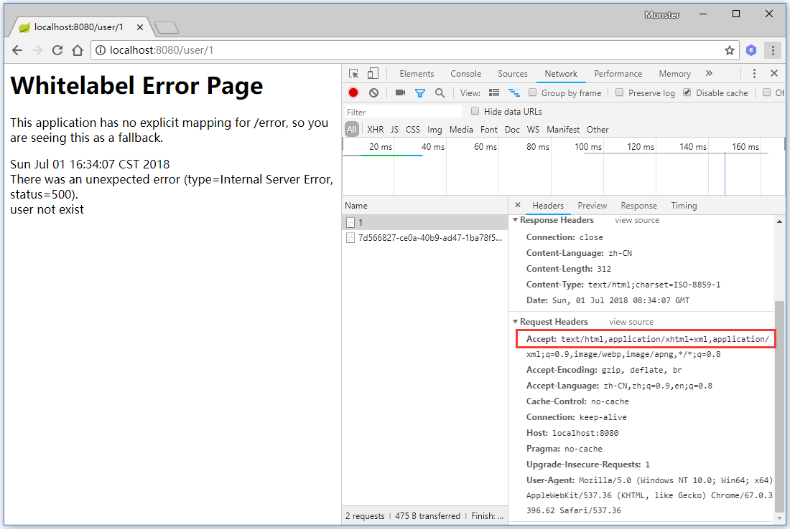
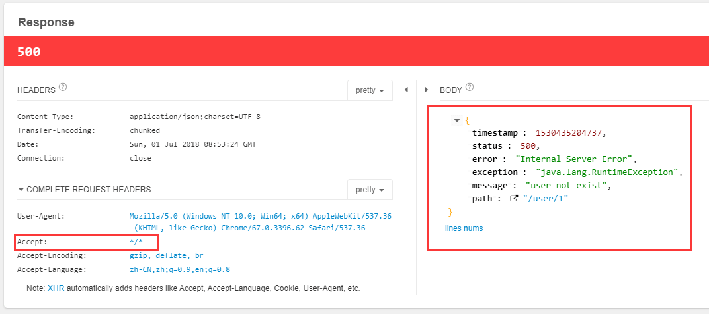
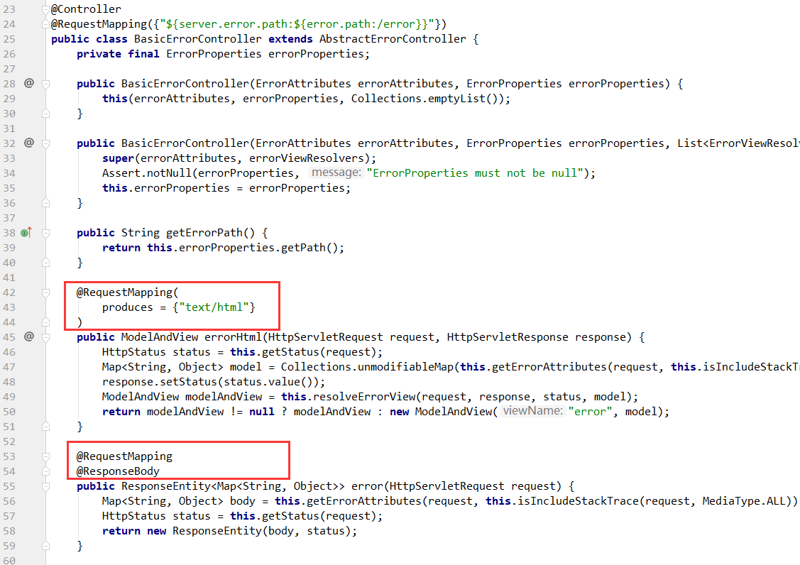
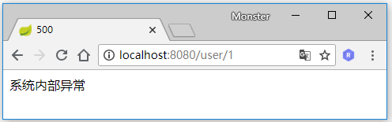
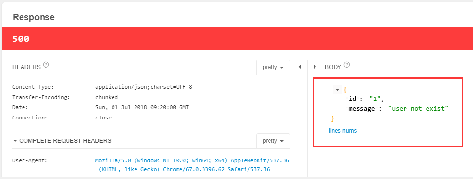

Spring Boot对异常的处理有一套默认的机制：当应用中产生异常时，Spring Boot根据发送请求头中的accept是否包含text/html来分别返回不同的响应信息。当从浏览器地址栏中访问应用接口时，请求头中的accept便会包含text/html信息，产生异常时，Spring Boot通过org.springframework.web.servlet.ModelAndView对象来装载异常信息，并以HTML的格式返回；而当从客户端访问应用接口产生异常时（客户端访问时，请求头中的accept不包含text/html），Spring Boot则以JSON的格式返回异常信息。下面来验证一下。
默认异常处理机制
假设应用中有如下一个Controller：
1 |
|
在代码中我们主动的抛出了一个RuntimeException，使用浏览器访问http://localhost:8080/user/1：  可看到页面返回了一些异常描述，并且请求头的accpet包含了text/html片段。
接着使用模拟发送REST请求的Chrome插件Restlet Client发送http://localhost:8080/user/1：

可以看到请求头的accept值为*/*，并且返回一段JSON格式的信息。
查看Spring Boot的BasicErrorController类便可看到这一默认机制的具体实现：

可看到errorHtml和error方法的请求地址和方法是一样的，唯一的区别就是errorHtml通过produces = {"text/html"}判断请求头的accpet属性中是否包含text/html，如果包含，便走该方法。
自定义html异常页面
我们可以通过在src/main/resources/resources/error路径下定义友好的异常页面，比如定义一个500.html页面：
1 |
|
然后再次通过浏览器访问:http://localhost:8080/user/1：

同样的，我们也可以定义404.html等常见的HTTP状态码对应的异常页面。
通过自定义html异常页面并不会影响客户端发送请求异常返回的结果。
自定义异常处理
除了可以通过自定义html异常页面来改变浏览器访问接口时产生的异常信息，我们也可以自定义异常处理来改表默认的客户端访问接口产生的异常信息。
我们手动定义一个UserNotExistException，继承RuntimeException。
1 | public class UserNotExistException extends RuntimeException{ |
然后定义一个Controller异常处理类ControllerExceptionHandler：
1 |
|
其中注解@ExceptionHandler指定了要处理的异常类型，注解@ResponseStatus指定异常处理方法返回的HTTP状态码为HttpStatus.INTERNAL_SERVER_ERROR，即500。HttpStatus是一个spring自带的枚举类型，封装了常见的HTTP状态码及描述：
1 | public enum HttpStatus { |
编写完自定义异常处理逻辑后，我们将UserController中的方法抛出的异常改为UserNotExistException：
1 | ("/{id:\\d+}") |
重启项目，使用Restlet Client再次访问http://localhost:8080/user/1，响应如下： 
源码链接 https://github.com/wuyouzhuguli/Spring-Boot-Demos/tree/master/25.Spring-Boot-Exception